Windows 720×1280. Chỉ các thay đổi được giữ lại. Báo cáo đủ 29 NPC
Δ [6.0, 24.0] UI unit. Đưa chân từ mép lan can/nước về lối đi ven hồ. Tương tác: PASS.
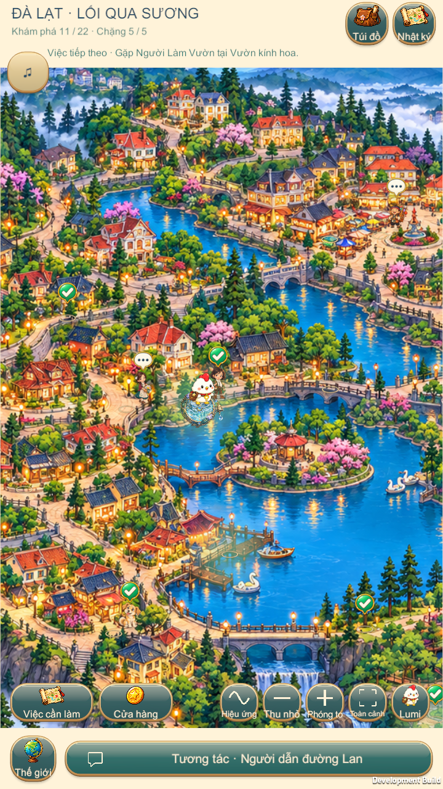
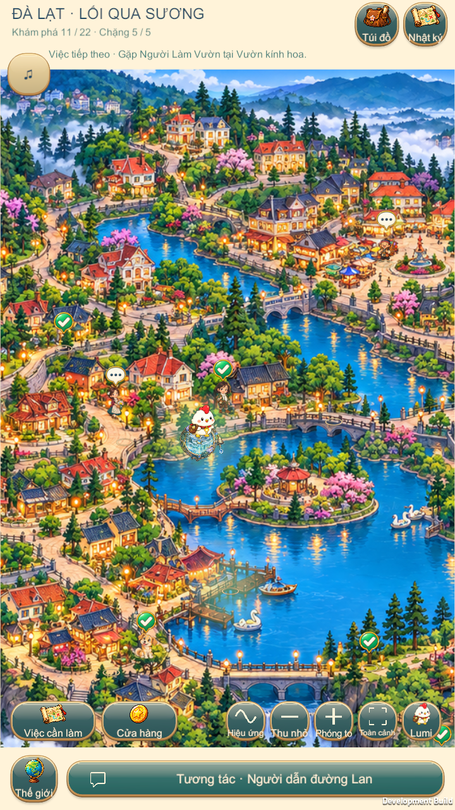
Δ [-34.0, 22.0] UI unit. Đưa chân từ mép rào về lối lát đá phía trong. Tương tác: PASS.
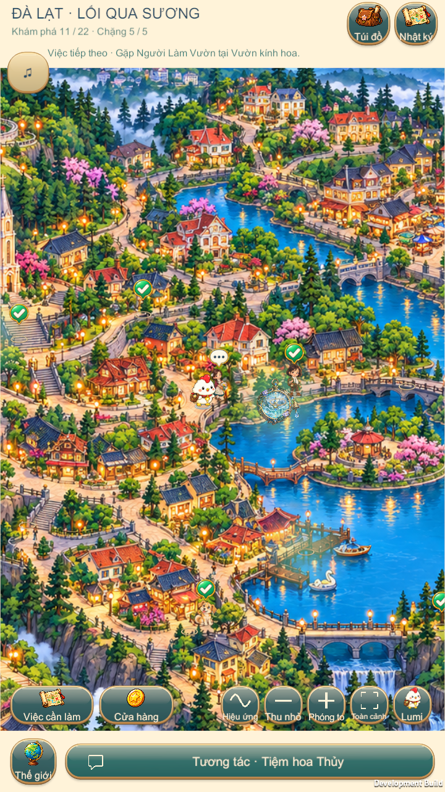
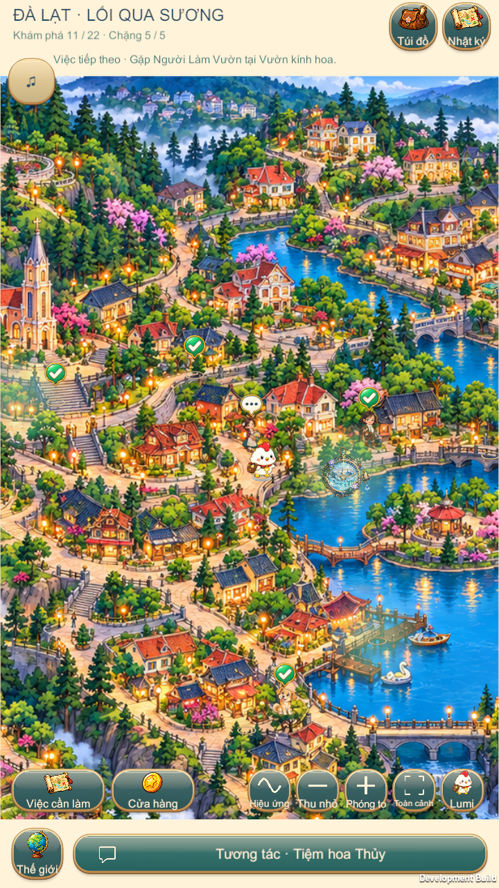
Δ [0.0, -13.0] UI unit. Hạ chân từ mép luống hoa về mép lối vườn. Tương tác: PASS.
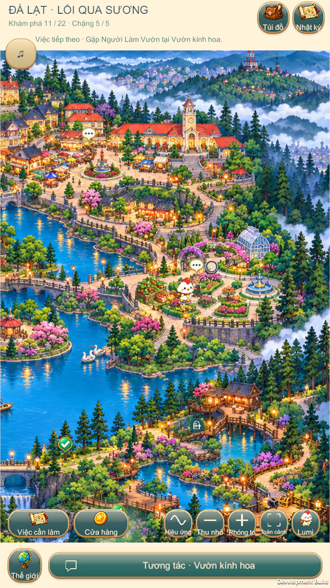
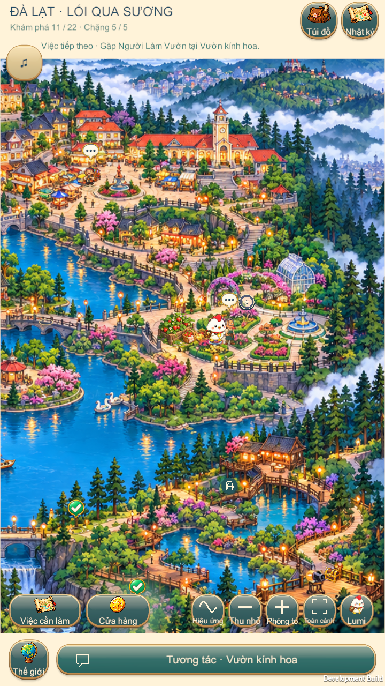
Δ [0.0, -16.0] UI unit. Hạ chân từ chân tường/cửa xuống nền trước cửa. Tương tác: PASS.
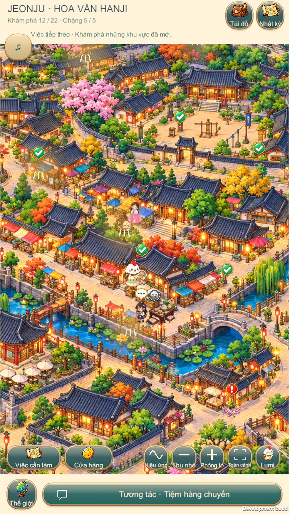
Δ [30.0, 17.0] UI unit. Đưa chân khỏi bụi cây sang lối cạnh hàng rào đài. Tương tác: PASS.
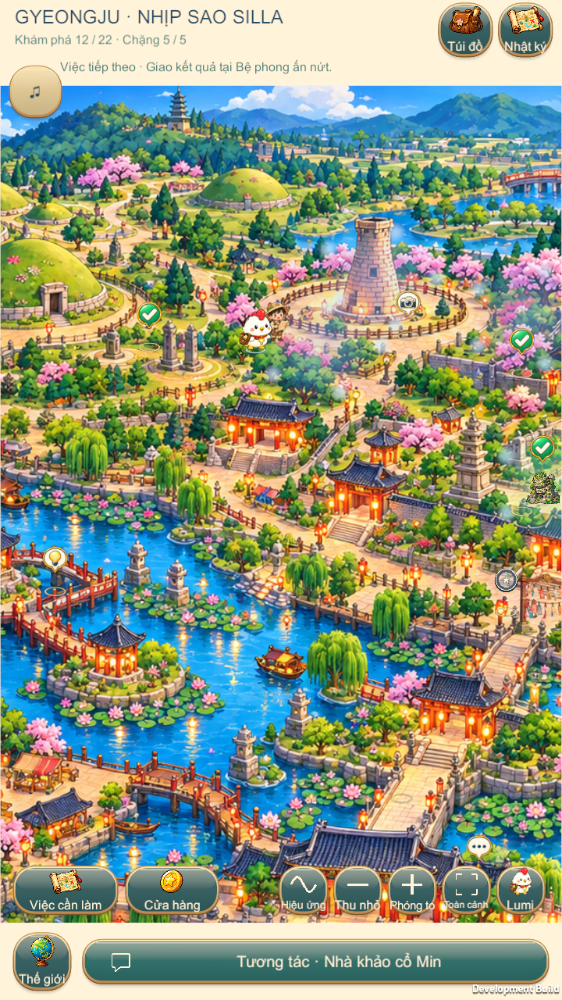
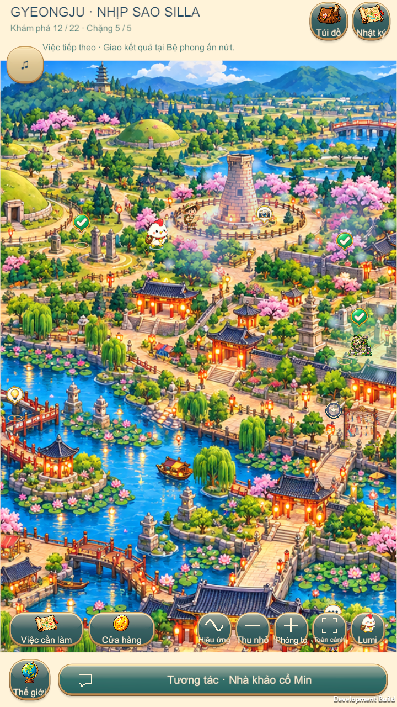
Δ [0.0, 35.0] UI unit. Đưa chân khỏi cây/bồn hoa lên lối công viên phía trên. Tương tác: PASS.
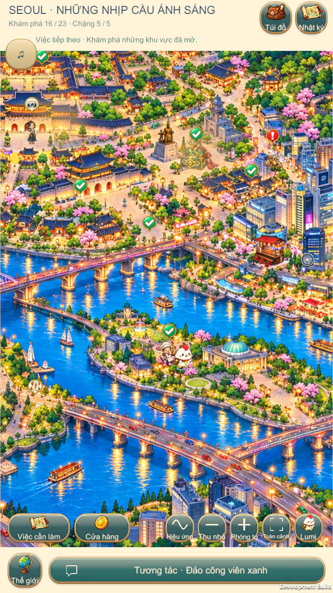
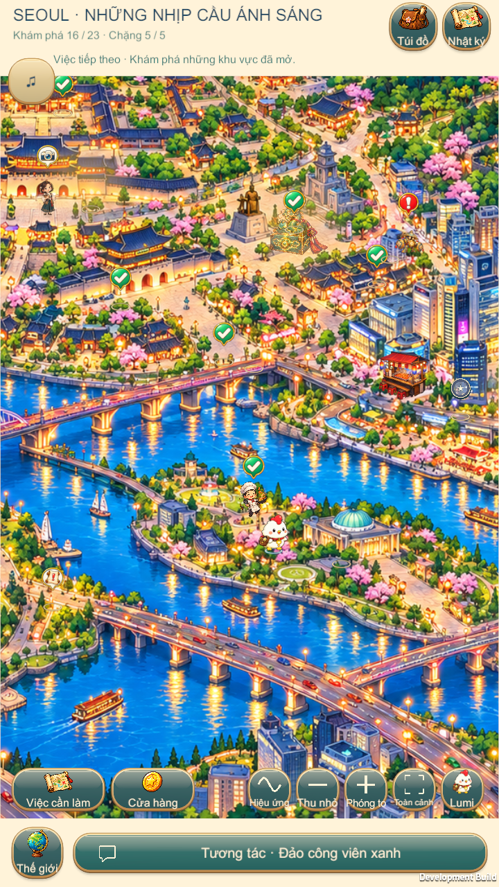